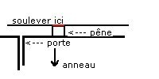
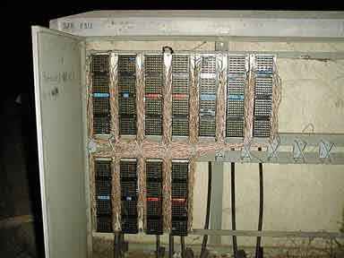
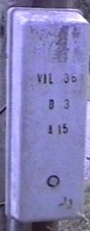
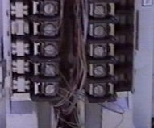
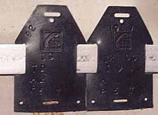

| PHREAKING |
COUNTERSTRIKE
- 2 |
LES
BOX-FILES 2
Voilà
la deuxième partie de notre série consacrée aux boxs. Ici
très peu de montage proposé pour l'instant, puisqu'il s'agit de
vous faire acquérir une "culture générale". Bien
sur, lorsqu'on aura traité toutes les box (ou presque), on se consacrera
plus au montage. D'ailleur, il y en a déjà en préparation.
-= La can-box
=-
C'est tout simplement la red-box adaptée aux cabines téléphoniques
canadiennes.
-= La cheese-box
=-
Transformer sa ligne téléphonique en cabine publique, ça
vous plairait? Bah désolé, c'est uniquement aux USA.
-= La clear-box
=-
Celle là aussi ne marche (marchait? en effet, elle a été
faite en 84!) qu'aux USA. Il existe des cabines qui ne demandent l'argent que
lorsque la communication est établie. Si l'argent n'est pas inséré,
le micro reste coupé, mais pas le haut-parleur. Le but est donc de remettre
en marche le micro sans inséré d'argent. Enfin, vu la date d'invention
de cette box, et la simplicité du système, tout à déjà
du être fait depuis longtemps pour y remédier.
-= La day-glo-box
=-
Aucun interet, puisque c'est une version plus détaillée de la
beige box. Je vous en parle juste pour votre culture générale
quoi. Au moins si vous la croisez vous saurez ce que c'est.
-= La gold-box
=-
C'est un façon compliquée au maximum pour utiliser la ligne de
son voisin. Il faut donc que les deux lignes soient côté-à-côte
dans le même boitier. Une base de la box est branchée à
votre ligne, et l'autre base à celle du voisin. La transmission se fait
par photoréception. Moi je dis bof...
-= La lunch-box
=-
Celle-ci est particulièrement interessante. Elle permet d'écouter
une ligne à distance. Elle envoie la conversation par voie hertzienne.
On peut la capter avec une simple radio, puisqu'elle utilise la bande AM.
-= La magenta-box
=-
Assez cool pour emmerder le monde. Si quelqu'un vous fait chier, cette box va
se charger de faire sonner sa ligne sans interruption. Il suffit juste de trouver
un endroit propice, comme pour le beige boxing.
-= La pink-box
=-
Elle sert à ajouter un boutton d'attente au téléphone.
Lorsque vous appuyez dessus, elle coupe le micro et envoie de la musique ou
ce que vous voullez d'ailleur.
La suite des Box-Files
au prochain numéro =)
LA
SKUNK-BOX
Ben
la, on va parler d'une box vraiment basique et facile a faire...
Elle a quand même quelques utilités sympas: écoutes de ses
propres communications téléphoniques, blast box, red box si vous
prévoyez d'aller aux States (arf)
Me demandez pas pourkoi je lai appelée comme ca, j'en sais rien.
Matos:
-1
téléphone (tout pourrave à 50 balles) de préférence
en une seule piece. (sans base quoi)
-2 prises jacks femelles (sur un vieux wakos y'en a)
-1 micro
-1 HP (facultatif)
-tournevis/fer à souder/étain...
La
box:
Ouvrez
votre téléphone, trouvez le micro et coupez ses 2 fils à
ras
puis soudez 1 prise jack aux fils qui PARTENT du phone. (pas
du micro)
Ensuite, vous faites pareil avec le hp du téléphone;
ca vous fait donc 1 telephone avec 2 jacks soudés a la place du HP et
du Mic.
Après, percez 2 trous derrière le téléphone
et faites-y passer les 2 jacks de
maniere à ce qu'on puisse y accèder quand le téléphone
est refermé, et
demerdez vous pour qu'on puisse faire la différence entre le micro et
le HP quand le téléphone est fermé et collez moi ca. (les
jacks).
Ensuite, refermez le tel et c'est fini !!
Les
utilisations:
*Avec le jack du hp*
-enregistrer
ses conversations téléphoniques en y branchant un magnétophone
ou directos sur le PC via la carte son
-enregistrer les tones du phone (mouais bon...)
-brancher le hp à nimporte quel autre hp, même
votre ampli de gratte
--->FT ca décoiffe...
*Avec
le jack du micro*
-balancer des tones d'un magnétophone =) au lieu
de se faire chier avec un montage ki les genere...
-vous le branchez sur votre carte son et vous balancez
nimporte kel son de votre PC sur la ligne
-pareil avec un walkman
-écouter les conversations de vos parents ;)
-et enfin si vous vouliez 1 blast box, ben vous lavez
!:
mettez le volume de votre PC a donf et pensez poa aux oreilles du
povre gars ke vous avez appelé.
En
cadeau Bonux, zavez aussi le kit main libre.
LES
GSM (réédition)
Bon,
je préfère vous prévenir tout de suite que cet article
ne va pas vous apprendre à phreaker des GSM (mais ça va venir,
et on fera tout pour). Elle va juste vous donner les bases du fonctionnement
du réseau GSM, l'organisation, le découpage du territoire, le
déroulement d'un appel etc... En espérant que ça pourra
donner des idées à certain, et faire avancer les choses.
I-
La norme GSM
Le
GSM ( pour Global System for Mobile communication) est le successeur du Radiocom
2000. En effet, cette ancienne norme était analogique, ce qui posait
de nombreux problèmes: l'encombrement, la qualité audio médiocre,
et surtout une trop grande phreakabilité. En effet, il suffisait d'avoir
un graveur d'EEPROM et un fer à souder pour pouvoir cloner un téléphone
analogique. De plus, les écoutes téléphoniques étaient
facile, avec un scanner, on pouvait facilement intercepter une communication.
Le passage au numérique a résolu tout ces problèmes d'un
coup. Les portables ont pu être miniaturisés, l'écoute est
meilleure, et surtout, les communications son cryptées. Et c'est loin
d'être un cryptage de base, mais cette partie sera abordée plus
loin. Il y a aussi l'apparition de la carte SIM (Subscriber Identification Module),
qui stockera les infos de l'utilisateur, style son numéro, ses paramètres,
son répertoire...
En France, trois opérateurs se partagent le marché du portable:
SFR, Itineris et Bouyges Telecom (avis personnel: je les ai classés du
meilleur au moins bon). Bien sur, comme on est en France, il en faut bien au
moins un qui ne fait pas comme tout le monde. Là c'est Bouyges qui va
jouer ce rôle.
II-
L'organisation du réseau
En
raison du grand nombre d'abonnés (environs 16 millions de personnes jusqu'à
maintenant en France), et comme il fallait que la communication ne soit pas
interrompue même si la personne se déplace, il a fallu diviser
le territoire en cellules.
 |
|
1 - Une cellule
est la plus petite division. Elle contient un emetteur-recepteur, encore
appelé "station de base"
2 - Les "station
de base" sont regroupées en divisions plus grandes, et gérée
par des "controleurs", qui sont chargé notamment d'assurer
la continuité des communication lorsque l'utilisateur change de
cellule. Les controleur peuvent transférer les données assez
vite d'une cellule à une autre pour qu'un utilisateur se déplacant
à plus de 300 Km/heure ne soit pas coupé.
3 - Les "stations
de base" et les "controleurs" forment ce qu'on appelle
un sous-système radio. Plusieurs "controleurs" sont gérés
par un sous-système réseau, composé de "centres
de commutation de mobile". Ces centres sont reliés à
des bases de données. Ils sont aussi interconnectés entre
eux, et reliés au réseau téléphonique filaire,
et au réseau numéris.
4 - C'est
donc la laison entre les centres, et le réseau téléphonique
filaire et numéris.
|
Evidement, toutes
les cellules ne sont pas de la même taille. Le trafique étant plus
dense, les cellules en milieux urbain sont beaucoup plus petites, et il y a
plus d'emetteur-recepteur au Km². Quand aux zone moins peuplées,
une "station de base" peut emettre et recevoir dans un rayon de 30
Km maximum.
III- L'organisation
des fréquences
Le réseau
GSM français fonctionne sur la fréquence de 900 MHz. C'est le
cas des réseaux de SFR et Itineris. Le réseau de Bouyges
fonctionne sur la bande de 1800 MHz, réseau encore appelé DCS
1800 (Digital Cellular System). Ce dernier étant le plus récent,
il a décidé de se tourner vers un autre système, ce qui
lui permet entre autre, d'avoir une très bonne qualité d'écoute.
Mais je ne reviendrai que très rarement sur ce réseau.
Mais de plus en plus, dans les grandes agglomérations uniquement, les
mobiles SFR et Itineris peuvent fonctionner à 1800 MHz, et vice-versa
pour Bouyges. C'est pour ça qu'il existe des téléphones
"bibande", qui penvent fonctionner sur l'une des deux fréquences
en fonction de l'encombrement du réseau. Il existe même des mobiles
"tribande", qui penvent fonctionner sur le réseau américain
(1900 MHz)(Pour simple information: 120 pays fonctionnent sur la technologie
GSM. C'est l'UTI (Union Iternationale des Telecommunications) qui a défini
ces trois bandes des fréquence pour le système GSM).
Mais
lorsque l'on parle de fréquence à 900 MHz par exemple, en fait
il faut considérer toute une gamme de fréquence. La bande 900
MHz est divisée en deux sous bandes: 890-915 pour l'emission et 935-960
pour la reception. Ces sous-bandes sont encore divisées, car une cellule,
aussi bien en emission qu'en reception ne doit pas être à la même
fréquence que les cellules voisines. Ce qui fait en fin de compte 124
fréquences différentes. Ce système est appelé FDMA
(accès multiple à répartition de fréquence).
Mais afin de traiter plusieurs abonnés en même temps. Vous imaginez
bien qu'une fréquence n'est pas monopolisée pour un utilisateur.
C'est là qu'entre en scène le système TDMA (accès
multiple à répartition dans le temps). Avec ce système,
chaque fréquence peut-être utilisée par huit mobile simultanément.
Le signal est décomposé en tranches ("trames"), qui
reviennent à intervalles réguliers. Chaque "trame" est
elle-même découpée e huit segments (slots). Chaque "slot"
est attribué à un portable. Donc en résumé, un portable
en communication n'émet et ne recoit que pendant un laps de temps très
court (le slot, qui dure 576.9 microsecondes), mais ce laps de temps reviens
assez souvent (toutes les trames, c'est à dire tous les 8 slots, faites
le calcul) pour que la communication paraisse continue.
| 1 |
2 |
3 |
4 |
5 |
6 |
7 |
8 |
1 |
2 |
3 |
4 |
5 |
6 |
7 |
8 |
1 |
2 |
3 |
4 |
5 |
6 |
7 |
8 |
| trame
1 |
trame
2 |
trame
3 |
Dans cet exemple,
le slot 8 a été attribué au mobile. Mais les trames ne
durant que quelques milisecondes, et revenant donc souvent, la communication
sera continue.
Le téléphone
dispose donc d'une horloge très précise pour être synchronisé
avec le relais. Maintenant, ne faisons plus attention aux autres slots:
| 1 |
2 |
3 |
4 |
5 |
6 |
7 |
8 |
1 |
2 |
3 |
4 |
5 |
6 |
7 |
8 |
1 |
2 |
3 |
4 |
5 |
6 |
7 |
8 |
| trame
1 |
trame
2 |
trame
3 |
La communication
est donc composée de la succession de ce slot 8, qui revient toute les
trames d'une fréquence donnée. Cette fréquence définit
un canal physique, qui lui même est décomposé en canaux
logiques: la communication réelle, et les informations du réseau.
C'est pourquoi le système GSM qui pourrait parraitre simple à
première vu, en est tout autre.
Bon, le temps me
manque pour finir cet article, il sera au complet dans la prochaine issue de
CounterStrike...
LE
BEIGE BOXING POUR LES OUFS
Voilà
un petit article pas trop long à lire (donc à écrire ;)
vu ke y'a que des photos...
En fait ca plaira (j'espere) aux newbies qui s'intéressent
au phreaking, vu ke la beige est a mon goût à la fois incontournable
et incontournée. (mais illégale, donc bla bla bla bla >et hop
un tit disclaimer).
On va donc passer en revue un maximum de points propices au Beige (Pour les
ultra-newbies, voir l'article sur la beige box sur le site quand y sera reviendu).
Toujours pour ceux qui n'y connaissent rien du tout, ben ça vous fera
un peu de culture en phreaking.
Et hop, Tipiak à pris son tit appareil photo pour vous fournir des explications
de base, parce qu'on dit toujours qu'une image vaut mieux qu'un long discours.
A croire que vous avez de la chance, puisque vous aurez les deux cette fois
ci.
 |
Le
répartiteur
J'avoue
que phreaker à partir d'un répartiteur c'est un peu chaud.
Plusieurs raisons à ça: en général il est
situé dans une zone résidentielle, donc même en
pleine nuit c'est pas très discret, ça fait beaucoup de
bruit quand on l'ouvre (autant vous dire que même pour prendre
la photo du bas on s'est pas éternisé), et les connexions
à l'interieur sont minuscules. Mais d'un autre côté,
vous avez accès à des centaines de lignes. Puis bon, c'est
toujours sympas de savoir comme c'est à l'interieur d'un répartiteur.
Pour les ouvrir, deux cas peuvent se présenter:
- y'a une poignée: dans ce cas si vous êtes pas trop cons
vous la tournez et ça doit s'ouvrir
- y'a pas de poignée: bah là c'est plus chaud. Explications:
faut
un tournevis plat assez long et costaud, et/ou un pied de biche.
A la verticale de l'anneau, tout en haut, à
la jointure, ca se passe comme ca :

|
Vous descendez le penne avec le tournevis et avec le pied de biche,
vous vous démerdez pour entrouvrir la moitié superieure
de la porte, le tout sans faire de bruit. Ensuite, soulevez la porte
pour la dégager du pêne inférieur et vous ouvrez...(avec
un pied devant pour pas faire trop de potin)
Ben
voilà, maintenant que vous l'avez ouvert, vous tombez face à
ça. Voyez bien qu'il est difficile (mais pas impossible) de s'y
retrouver dans le bordel de fils.
Bon,
je vais pas m'éterniser là-dessus, puisque tout ça
fera l'objet d'explications très détaillées plus
tard.
|

|
 |
Les
plaques au sol
Là,
très gros inconvénients (avec un s). Elles ne se trouvent
que dans des zone urbanisées. Rares sont celles qui sont isolées
de la civilisation. En plus, elles ont pas l'air comme ça, mais
elles pèsent lourd, très lourd... D'ailleur je me suis
niqué les doigts pour vous!!! Pour que vous ayez la belle photo
qui est en-dessous!!! Alors appréciez là, parce que j'ai
vraiment douillé sur ce coup là.
|
Pour aucune raison valable, vous n'aurez pas la photo dans cette édition
de CounterStrike,
mais dans la prochaine version, la 2.1 =) Alors va falloir reviendir
sur le site assez souvent, vu que je ne sais pas encore quand je l'aurai
cette putain de photo que ça fais déjà 6 MOIS QUE
J'ATTEND BORDEL!!!!!!!!!!!!!!!!
|
PHOTO
PHOTO PHOTO
pas
dispo
PHOTO
PHOTO PHOTO
|
 |
Les
raccordements aux habitations
Ah, ça
c'est un truc bien, parce qu'il y en a absolument partout. Même
dans la cambrousse la plus profonde. En plus, elles sont très
facile à ouvrir... au pire il y aura une grosse vis en plastique.
Quoique à bien y réfléchir, j'en ai vu en fer,
fermé par une serrure, mais bon, faut quand même être
tétu pour voulloir ouvrir des boites comme ça. Donc elles
se trouvent en face des habitations, sur les murs, les poteaux.
|
Quand on l'ouvre c'est magique. En général, il y a une
grosse gaine noire qui contient les lignes descendantes (vers le central
téléphonique). Les fils qui en sortent sont TOUJOURS raccordés
par paires aux dominos avec du gel dessus. Ensuite les fils blancs sont
les lignes montantes vers les habitations. Pour ceux qui n'ont jamais
eu l'occasion d'en voir,
ben voilà. Si vous faites du beige boxing un jour, il suffit
de choisir un domino, de pas foutre les doigts dans le gel parce que
c'est dégueu, de prenre les deux fils de la ligne montante et
de les dénuder. Ensuite, beige box rulez!!! Mais bon, vous le
ferez jamais parce que c'est illegal, et d'abord c'est pas bien de trafiquer
du matériel qui ne vous appartient pas =) Nous on se dégage
de toute responsabilité.
|

|
|  |
On en trouve
un peu de toutes les tailles. En général, les boites comme
ça sont sur des poteaux, et particulièrement au début
des voix communales. Elles font souvent le lien entre les lignes enfouies
et aériennes. C'est donc le même principe, sauf qu'il y
a plus de ligne eheh =)
|
Enfin pour ceux qui auraient du mal à reconnaitre du matos de
chez FT, ben c'est simple, ça porte en général
ce genre d'étiquettes, de 4cm sur 8
Enjoy
=)
|

|